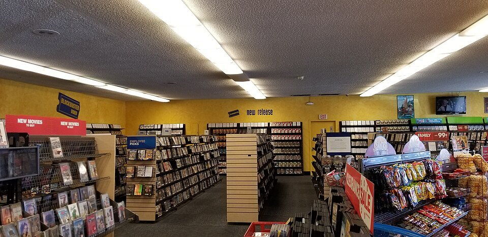

Chapter 3 · Technology and Competitive Advantage
Technology and Competitive Advantage: How Zara Made Speed Impossible to Copy
Zara's rivals have watched it for twenty years, can buy every piece of equipment it owns, and have said publicly that they intend to match it. None of them has. This chapter asks which parts of an information system a competitor can simply purchase, and which parts they would have to become a different company to match.
Wanna go analog?or save it as a PDF; the navigation drops out
A fashion trend appears on a runway or a street corner. At most clothing companies, a garment responding to it reaches stores six to nine months later: an eternity, and a guess. At Zara, it can hang on a rack in roughly two weeks. Same industry, same fabrics, same sewing machines. The difference is an information system, and it made Zara's parent company one of the most valuable retailers on earth.
By the end of this chapter you should be able to:
- Define competitive advantage and explain why sustained is the word that matters.
- Apply Barney's three tests (valuable, rare, hard to imitate) to a company's position, and name the four ways an information system can create an advantage.
- Explain why most technology advantages evaporate, and what the exceptions have in common.
- Describe the data flywheel and explain why the data a company collects from its own customers and operations is worth more to it than any data it can buy.
- Explain why Zara's advantage lives in the arrangement of its components rather than in any technology it bought.
1What competitive advantage actually is
Chapter 2 discussed the value of information and the value test. Overall, we concluded that information has value when it helps somebody decide. This chapter asks the strategic version of the same question. That is, how can information, and the system that produces it, make organizations better than their competitors? And how can the information system help you say competitive in the long run?
Before we answer those questions, let's start by defining what a competitive advantage actually is, and what makes one last.
1.1 Competitive advantage, and what makes it last
So, what is a competitive advantage? A competitive advantage is the ability to create more value than rivals: by charging more for something customers prefer (differentiation), by delivering at lower cost (cost leadership), or by responding faster than the market can (speed, which is really both). The word that matters more than "advantage" is sustained. Anyone can win a quarter. The strategic question is what stops rivals from copying you by next year.
First, a word about value, because this chapter uses it differently from the last one. In Chapter 2, information had value when it helped somebody decide. Here, value means what it means to an organization and a customer: the difference between what someone is willing to pay for what you offer and what it costs you to provide it. A company creates value when it makes that gap bigger, by charging more for something people prefer, by delivering the same thing for less, or by getting there first. Everything in this chapter is about creating that gap and keeping it.
So how does a company know when it has a sustainable competitive advantage? The standard test comes from the strategy researcher Jay Barney, who says an advantage is sustainable only if the thing behind it passes three tests. The test is not about your product. It is about the thing behind your advantage, whatever gives you the edge: a location, a piece of data, a process, a relationship. Ask three questions about that thing.
Is it valuable? Customers want what it gives them enough to pay for it, and it makes the company money, either because people pay more or because it lets the company do the same thing for less.
Is it rare? Few competitors have it, or none do. If everyone in the industry has the same thing, it cannot separate anyone.
Is it hard to imitate? A rival cannot get it just by spending money. Copying it would take years, or a change in how the rival's whole company works, or it cannot be done at all.
Let's imagine you and your friends want to open a small coffee cart on campus that sits by the library's main entrance. What is the thing behind your advantage? Not the coffee; it is the location. Is the location valuable? Yes: students want coffee they do not have to walk for, and they will pay for it. Is it rare? Yes, because there is one main entrance, and the nearest coffee is somewhat far away. Is it hard to imitate? Yes, because once you sign the lease with the university, nobody else can put a cart there. The location passes all three tests, and your cart will do well for as long as the lease and the library last.
Now, imagine you and your friends are making good money from the cart and your business is growing. So you decide to buy a piece of fancy technology to seemingly make the coffee taste better: an espresso machine. Now run the same test on the machine. Is it valuable? Yes: your customers want the better coffee, and some of them will pay more for it. Is it rare? No, every cafe in town has one. Is it hard to imitate? No, a rival can order the same model this afternoon. The technology is valuable, but it is not a competitive advantage. Other parts of the business are.
In the real world, businesses make this mistake constantly: they assume technology alone will give them a competitive advantage. Most organizations will buy the fancy espresso machine. What you are looking for is the spot by the door.
An advantage is sustainable only when the thing behind it is valuable, rare, and hard to imitate, and the last of the three is the one that usually fails: a rival can buy almost anything. Keep the test in hand for the whole chapter. At each step of the Zara case below, ask what the thing behind the advantage is, and what a rival with unlimited money would still find hard.
Technology you can buy cannot be a competitive advantage, because your competitor can buy it too. A durable advantage lives in the thing behind the technology: the way data, software, networks, and people are arranged around a process that a rival would have to rebuild its own company to copy. That is the espresso machine and the spot by the main entrance.
Now let's think about what an information can do to help give you an advantage.
1.2 Four ways an information system changes competition
Barney's test for a sustainable competitive advantage tells you whether an advantage will last. But it does not tell you how an information system could help create one.
So where does the technology advantage come from? Most information systems just run the business better: faster checkouts, cleaner accounts, fewer phone calls. That is indeed useful. The problem is that every competitor can do the same.
But there are four things an information system can do that change the competitive structure of an industry itself, and each one works through a specific component of the information system. Here's the four ways an information system can help you achieve a sustainable competitive advantage:
Making it hard to leave (switching costs). An information system can accumulates your history, preferences, or data. That makes leaving a platform expensive. Take Spotify for example. Every playlist you build deepens the trench around your streaming account. The component of an information system giving you an advantage here is data: the customer's own data record, held by the company.
Network effects. An information system grows more valuable as more people use it. Think about Venmo. The app is worthless to you if none of your friends have it, mildly useful when a few do, and something you cannot leave once everyone you split rent and dinner with is on it. Nobody at Venmo made the app better; your friends did, by joining. The component doing the work is the network, in the sense of the connected users, not the cables.
Barriers to entry. When serving customers requires a system that took a decade and billions to build, the cost of building one keeps newcomers out. Think about why nobody starts a new Amazon. The idea is not secret: sell everything online and deliver it fast. But delivering fast means warehouses near every major city, software that knows what is in each one, trucks, and years of data about what people order where. A newcomer could raise the money and still be a decade behind. Here the barrier to entry is the entire information ecosystem, all five components assembled and working together, not any one piece of it.
Speed of learning. This is the least obvious of the four, and the one where an information system matters most. Every business runs a cycle: notice something, act on it, see what happened, make it better. An information system lets a business record and store data, and that is what makes the cycle faster and better. For example, Netflix records every play, pause, and abandoned episode, so it knows within days whether a new show is working and what kind of show to make next. A traditional TV network waited for ratings, then for a season to end, then for the next year's pilots. Same business, cycles of different speeds, and each turn of Netflix's cycle makes the next decision better, which is how a company that started by mailing DVDs ended up making shows that win Emmys. The two main components of an information system here are the data, what gets recorded and stored, and the people, the creative ones who decide how to act on the data. Take away either one and the cycle stops. The Zara case at the end of this chapter is built entirely on this one.
(Questions and answers live in the web page; edit them there.)
Seven situations. The first three ask which part of Barney’s test the thing behind the advantage fails. The last four ask which of the four mechanisms an information system is using. Decide before you check.
Run the test on the thing behind the advantage, not on the product. A rival can copy the coffee this afternoon; the question is whether they can copy the spot by the door.
So here is where section 1 leaves you. Technology on its own almost never passes Barney's test, because any technology you can buy, your rival can also buy. That means technology is almost never rare and almost never hard to imitate.
But an information system can still separate a business from its competitors, through the four mechanisms above: making it hard to leave through data collection (switching costs), growing more valuable as more people join (network effects), making the cost to enter the market almost impossible to afford (barriers to entry), and/or learning faster than competitors (speed of learning).
Notice that every one of those four requires technology. Without an app there is no data collection; without the network there are no network effects; without the recorded data there is nothing to learn from faster. Technology is necessary. It is just not sufficient.
The advantage comes from how the five components, hardware, software, data, networks, and people, are arranged together, and arranging them well is the job the MIS major trains you for.
Section 2 asks the question that follows from that: if technology advantages are so easy to copy, why do companies keep buying more and more technology, and why do most technology advantages fade?
2Why most technology advantages evaporate
Section 1 said a sustainable competitive advantage lasts only while the thing behind it stays valuable, rare, and hard to imitate. As I just said, technology has a habit of failing that test, and usually on the same part: whatever you bought, your competitor can buy. This section is about why that happens so reliably, and what the exceptions look like.
2.1 First-mover advantage
The first reason technology advantages fade is that companies tend to equate being first to an industry with having an advantage. Ask a company how it will stay ahead and the most common answer is: we got there first. The edge a company gets from doing something before its rivals do is called first-mover advantage.
You learn the industry sooner than your competition did. Customers then connect the idea with your company's name, and some of them are held by switching costs before another company can reach them.
First-mover advantage is real, and it is routinely oversold, because being first also means paying to educate the market and making the mistakes later entrants get to skip. Vine invented the short looping video in 2013 and was dead by 2017; TikTok arrived later and owns the format. Snapchat invented Stories, and Instagram copied the feature in 2016 and now has more people posting them. Clubhouse was the app everyone was on in the spring of 2020; by the next spring, Twitter, Spotify, and Discord had all built the same thing and Clubhouse was a memory.
Now run "being first" through Barney's test. It is valuable, briefly. It is not rare, because the second company arrives within months. And it is not hard to imitate, because the later entrant copies what worked and skips what did not. Being first is a head start, not an advantage. It evaporates unless the company uses the head start to build something rare and hard to copy, which is what TikTok did with its recommendation data and Vine never did.
2.2 Commoditization, and why Carr said IT doesn't matter
The second reason technology advantages evaporate is bigger than being first, and it has a name. When a capability becomes something anyone can buy, it stops setting anyone apart. That process is commoditization: the technology becomes a commodity, an ordinary purchase like electricity or office chairs, available to every competitor at a published price.
When a capability becomes purchasable by anyone, it stops differentiating anyone.
Think about a website. In 1996 a company with a website was ahead of nearly everyone; it was rare and, for a while, hard to build. Today a website costs twelve dollars a month from Squarespace, every business has one, and having one tells a customer nothing about you. The same thing has happened to email, to online ordering, to mobile apps, and to accepting a credit card by phone, storing data in the cloud, and will likely happen to AI. Each may have given an advantage once, but each eventually becomes a purchase, and the question this chapter keeps asking is which of today's advantages are next.
The test for commoditization is simple: can a competitor have this by next quarter if they signed a contract? Servers, tracking tags, analytics software, cloud servers, and AI all pass that test, which is why none of them is actually an advantage.
Now the other side. Some things cannot be bought next quarter at any price: a supply chain built over ten years, store managers trained to make decisions on their own, a record of every customer request going back a decade. Those took years to put in place and would take years to copy, so they never become commodities. That is how a company can stay ahead for twenty years while owning nothing its rivals cannot also buy. The equipment is a commodity. The arrangement around it is not.
2.3 Does technology matter?
In 2003, Nicholas Carr scandalized the technology industry with an essay titled "IT Doesn't Matter." In the essay, he argued that technology eventually becomes cheap and ubiquitous, and in this sense becomes much like electricity: essential, and strategically irrelevant, because everyone has it. History gives him plenty of support, and section 3 walks through two examples.
Since then, we have seen that Carr was right about one thing and wrong about another. He was right that technology you can simply buy stops being an advantage almost immediately, and becomes something you need just to stay in business. That is a real category and worth keeping separate in your head: a capability where having it wins you nothing and not having it loses you customers. Mobile ordering was an edge for Starbucks in 2015. Today every coffee chain has it, a cafe without it simply loses the morning rush, and nobody picks a coffee shop because it has an app.
What Carr got wrong is where the line falls. The individual technologies---the hardware, software, and networks---a company buys, become cheap and available to everyone. The arrangement of the technologies do not: the data you have collected over many years, the way your particular company runs, the people trained to act on what the data tells them and the creative freedom you give those people provide the advantage, not the technology.
Go back to Starbucks. Any coffee chain can buy an ordering app, and all of them have. What none of them can buy is fifteen years of purchases with a name attached, or a company that has learned to set staffing and pick offers from that record, or the habit of collecting it at all. Nobody sells twenty years of your own customer history, or the habits an organization builds around using it. Carr looked at the app and saw a commodity. He was right. He did not look at what the app had been collecting.
2.4 Does AI matter?
Now, let's think about whether Carr's argument holds for AI. Remember, Carr said that technology becomes a commodity if anyone can buy it. He also said that the arrangement of how you use technology matters. Let's use this logic to see how AI may give companies a competitive edge.
Imagine you own a company. Your competitors are investing in AI, so you feel like you need to invest in AI, too in order to keep up. Now, your company can rent and buy the same AI models as your competitor, from the same handful of AI providers, at published prices. AI models and software is available for purchase. You can go buy a monthly subscription to Anthropic's best AI model right now. You can rent the same cloud infrastructure to run them on. If your competition wants what you have, they can do the same thing.
By Carr's test, AI is not a competitive advantage. In 2026, buying AI is becoming the cost of staying in business, and it is happening right now: companies announcing an AI strategy are frequently announcing that they have bought what everyone can buy and using AI in a similar way. So, if AI models sit on the buyable side of Carr's argument that means AI models are a commodity.
Then what gives you a competitive advantage when it comes to AI? What passes the Barney test for sustainable competitive advantage? The same three things that have mattered every single time a new technology has arrived.
Data. The data an AI model learns from is yours, and it took years to accumulate. This is valuable, because it is what makes an AI model useful to your business in particular. It is rare because only your business collected it. It is hard to imitate because a rival cannot buy ten years of history as related to your business; they can buy some data, and can start collecting today and wait.
Business processes. The way your company actually uses AI matters and incorporates AI into existing business processes matters. This valuable because an AI model aimed at the wrong process helps nobody. This is rare because processes grow out of one company's history. This is hard to imitate because copying a business process means changing how the rival's whole company works, which is the thing Barney's test says is hardest.
People. This is really where the core of a sustainable advantage related to AI comes from. Let's think about why. Not because your people are smarter, since a rival can hire them: individual people fail the "hard to imitate" test every time somebody gets a better offer. Because people are the component that arranges the other four components of an information system into a business. Somebody decides what data to collect and record, what to point the AI/predictive models at, who is allowed to act on the answers, and what to do when the answers are wrong. Those decisions pass all three parts of Barney's test.
The view that AI is a commodity rather than a competitive advantage is not a fringe one, or Prof. Califf's opinion. In 2025 David Wingate, Barclay Burns, and Jay Barney argued in MIT Sloan Management Review that AI changes nothing fundamental about sustained competitive advantage once its use is everywhere. The third name is the one to notice: Barney wrote the test for sustainable competitive advantage in section 1, and running his own test on AI, he scores it indeed valuable, but not rare, and not hard to imitate.
Their conclusion is worth thinking about. AI will eventually become a source of homogenization rather than differentiation, lifting whole markets while uniquely advantaging nobody. Think about customer service. Four years ago, a company with a chatbot that could actually answer a question stood out. Today every airline, bank, and phone carrier has one built on the same three or four AI models, and they all answer about equally well. No customer picks an airline because its chatbot is better. Every company in the market got better at the same thing at the same time, which is a rising tide, not an advantage. The same thing is happening to writing marketing copy, summarizing documents, and screening resumes: markets where AI made everyone competent, and competent is now the baseline.
The authors indeed expect real but temporary advantages for early movers with novel AI models. Over time, they put lasting differentiation in human creativity: the people who find a use for AI and the system around AI, a partnership, or a way of reaching customers that nobody else thought of. Think about Duolingo. The language model it uses is rented, and any competitor can rent the same one. What Duolingo has done with the model however is based on a creative idea: a video-call feature where you practice a conversation with an AI character who remembers what you got wrong last time, tied into the streaks and lessons the app already had, and sold as a subscription tier. A rival with the same model could copy the feature in months. What they cannot copy is that Duolingo thought of it first, built it into a system that already had millions of daily users, and used those users' mistakes to make it better. The model was the commodity. The idea, and the system around it, was the advantage.
The authors also talk about how companies can indeed purchase data, but what makes data truly valuable is the data a company has been collecting and storing over years. For example, in the last chapter we saw that Starbucks could build a useful AI platform in 2019 because it had been collecting purchase data since 2009. The AI model was available to everyone. The ten years of data were not.
Now, let's think about how the components of an information system may contribute to a sustainable component advantage.
2.5 Which information system components matter for a sustainable competitive advantage?
Chapter 1 said every information system is built from the same five components. This chapter adds a second question to ask about each one: can a competitor buy it? Run the five components through that test and they sort into two groups very cleanly.
The five components, sorted by whether a rival can buy them
| Component Can a rival get this? So what is it worth? |
Software Yes, licensed by the seat, often from the same vendor you use Necessary. If you can buy it, so can they, and usually by next quarter.
Networks Yes, rented from the same providers Necessary. Connectivity stopped being a differentiator decades ago.
Data Some of it. Plenty of data is for sale, and anything you can buy your competitor can buy too. Purchased data is a commodity like any other purchase. The data your own operation generates, about your customers and your work, is the part nobody can sell them.
People No. They can hire similar people; they cannot hire your organization. The judgment about what to build, what it means, and what to do about it. The part that decides whether the other four were worth anything. ---------------------------------------------------------------------------------------------------------------------------------------------------------------------------------------------------------------------------------------------------------------------------------
As the table suggests, hardware, software, and networks are things you buy, and none of them will ever separate you from a competitor. They are still critical to how modern business is run; a company with a failing network does not get to compete (or function) at all. But a rival can buy the same three, so they answer the question "what do we need to function," not "what will put us ahead."
Data is the one component that is both bought and made, and the made part is the reason people matter so much. The data a rival cannot buy exists only because somebody at your company decided, years earlier, that it was worth recording. For example, Starbucks decided to attach a name to every purchase in 2011, long before any return calculation could have justified it. A retailer that writes down what customers asked for and could not find has invented a data source no register captures and no vendor sells. Nobody required either decision, and both turned out to be the asset.
People are the component that made those decisions, and every other decision in the table. A rival can hire your people, so the individuals are not the advantage. What they leave behind is: what your company chose to record, what it points its systems at, who is allowed to act without asking, and what happens when the answer is wrong. Those choices are made by people, they take years to accumulate, and they do not leave when the person who made them does. That is why every "hard to imitate" in the table traces back to the people row.
An important thing to note is that a component can be valuable without being an advantage. For example, a hospital needs a network that does not fail. If it does, surgeries get postponed and electronic healthcare records become unreachable. But notice what the hospital gets for a network that works. It gets to open its doors.
Overall, then, remember two things at once. Hardware, software, and networks are essential parts of modern business. No company runs without them. The people who understand the essential components and knows what data is worth collecting and who can think creatively about how to use the data and technology to improve business processes are the ones who will thrive in a modern business.
3Two mini-cases, one old question
The two mini-cases below show what happens when a company has the technology, but lacked the creative vision for the future. The first mini-case is about Blockbuster. Its advantage was never copied. Its store network was rare and expensive to match right up to the end. But Blockbuster lost anyway, because customers stopped wanting what the stores provided. The second is Zoom. In 2020 it had the best product in a market that suddenly everyone needed. Within two years, everyone had a product about as good as Zoom because software is the easiest thing in the world to imitate. That is section 2's story with a company name on it: a failure on the third part of the test, hard to imitate.
Read both mini-cases below with the Barney test in mind. Ask what the thing behind the advantage was, which part of the test it failed, and whether anyone inside the company could have seen it coming.
3.1 Mini-case 1 · 2004: the late fee that funded a company
Picture a Friday night in 2004: a leased room in a strip mall, shelving, a staffed counter, a freezer, and racks of discs, and nine thousand rooms exactly like it across the country. What was the thing behind Blockbuster's advantage? Not the movies, which every store in America could stock. It was the chain: nine thousand leases in nine thousand good locations, which no competitor could assemble quickly. That is a barrier to entry, the third of the four mechanisms from section 1, and it protected the company for years. But then the barrier became the burden. Netflix came into the market. It started mailing discs and eventually got into streaming. Netflix found that it did not need physical stores at all, and Blockbuster's expensive advantage turned into an expensive obligation it could not exit. It filed for bankruptcy in 2010.

Now run Barney's test on the chain of stores. Valuable? For thirty years, yes: people wanted movies at home, and a store within ten minutes was the only way to get one. Rare? Yes; nobody else had nine thousand. Hard to imitate? Yes, and it stayed that way right up to the end. Nobody was going to assemble nine thousand leases quickly. The chain passed all three tests in 2004. Six years later the company was bankrupt.
This is the most dangerous way an advantage ends. Blockbuster's chain was still hard to copy on the day it stopped mattering, because the industry itself changed while the asset stayed the same. Being hard to imitate is not the same as being worth imitating. A movie that arrives through the internet needs no store, so the first question in the test, valuable, quietly flipped to no, and every internal measure still said the asset was strong.
There is a second failure inside the first, and it is the one this chapter is about. Blockbuster recorded every rental against a membership card for years, across nine thousand stores: who rented what, when, and what they returned late. That was a record of what Americans watched, and the company used it the way a store uses a register, to manage stock and collect late fees. Netflix collected the same kind of data from its first mailed envelope and used it to learn what each customer would want next, which made a service with no stores feel personal, and later told the company what to license and what to make. Same component, two decisions about what it was for. That is the decision section 2 said a rival cannot buy, and Blockbuster made it the wrong way.
Which part of the test it lost: valuable. Which component carried the advantage: none of the five. Nine thousand leases are not hardware, software, data, networks, or people. Blockbuster's advantage sat entirely outside its information system, which is why no information system could rescue it, and why Netflix beat it with a component Blockbuster had collected for years and never thought to use.
Show the answer
Rare and hard to imitate both held right up to the end. What failed was valuable: once a TV show or movie could arrive to a person's home without a store, a chain of stores was no longer worth having.
3.2 Mini-case 2 · 2021: the software everyone suddenly needed, and then everyone had
In early 2020, video calling stopped being an office feature and became how school, work, and family happened. Zoom won that moment. What was the thing behind its advantage? The software itself: its software worked when the others did not. Zoom connected people faster, held up on low income connections, and a person who had never used it could join a call by clicking a link. It was simple and easy to use. Daily participants went from around ten million in December 2019 to hundreds of millions within months, and the company's share price rose roughly five times over 2020, and more than eight times at its October peak.
Now run the sustainable competitive advantage test from section 1 (valuable, rare, hard to imitate) on Zoom's position in 2020. Valuable? Yes. Rare? For a while, because the alternatives were worse. Hard to imitate? That is the part of the test that broke, and it broke quickly. Microsoft already sold its Office suite of software to most large employers (including WWU) and included Teams with it. Google included Meet with its own bundle. Neither had to be better than Zoom. They had to be adequate and already paid for, and adequate arrived within about two years. That is commoditization, the second reason from section 2, at the speed software allows.
Zoom is still a real business with real revenue, and this is not a story about a company dying. It is a story about an advantage that was never durable being mistaken, by the market, for one that was. The share price fell roughly ninety percent from its 2020 peak over the following years, which is the market correcting a claim about durability rather than a claim about quality.
Which part of the test it lost: hard to imitate. Which component carried the advantage: software. Software is the easiest of the five components to copy, and Zoom's rivals did not even have to copy it well. Microsoft and Google already sold software to Zoom's customers, so they only had to add a video call to what those customers were already paying for. Being better is not a defense when the alternative is free and already installed.
Now look at what Zoom did not have. Run it through the four mechanisms from section 1 and every one comes up empty. No switching costs, because nothing actually lived in Zoom;. No network effect, because the effect belonged to the meeting link, and a link works in Teams too. No barrier to entry, for a company that already sells software to your employer. And no speed of learning, because Zoom collected the data about how the world met and never turned it into a decision a rival could not copy. The best product in the market at one time, and not one of the four things that would have made it last.
Answer. The candidates are data and people. Data: a record of how millions of organizations actually ran meetings, what they connected to, and what they paid for, which Zoom did collect but never really turned into something a rival could not match. People: a habit inside customer companies of building their calendars, training, and processes around Zoom specifically, so that leaving would have cost real work. Neither was realistically available in 2020. Everyone adopted Zoom in a hurry, under duress, and adoption in a hurry builds no habits and no arrangement; it built a subscription, but subscriptions can be cancelled. That is why the advantage was gone the moment the alternatives caught up.
4Main case · Zara: the two-week dress
A customer in a Zara store asks for a dress in a color that is not on the rack. That evening the store manager records that request on a handheld device. That is valuable and rare and hard to imitate data. The data quickly travels to Zara's headquarters in northern Spain, and in about two weeks a version of that dress is in the store and on the rack, and in others where the same note arrived.
The Zara case below shows the whole chapter working in one company. Zara owns nothing its rivals cannot buy: the RFID tags, the warehouse software, the point-of-sale systems are all for sale to anyone. What it has is a cycle, from a customer asking for something on Tuesday to a version of it on the rack two weeks later, and every part of that cycle is ordinary except the arrangement.
Run Barney's test on the cycle and it passes all three: valuable, because it attacks the largest loss in fashion, clothes nobody buys; rare, because no competitor runs it at this speed; hard to imitate, because copying it means rebuilding a supply chain, a warehouse, factory relationships, and the habit of trusting store managers, all at once.
Run the four mechanisms and Zara has only one, speed of learning, and one is enough when it compounds.
Underneath it the information system is a single decision somebody made years ago: record data about what customers asked for and could not find. No register captures that, no vendor sells it, and twenty years of it is the one thing a rival with unlimited money cannot buy.
The case ends with the question the chapter cannot answer for you: how long does that data advantage last, and what would have to change for the company to lose its advantage.
Three numbers set the scale of what Zara's system achieves:
4.1 The cycle of data at Zara
Zara's information system is a cycle: a cycle that repeats, in which what customers do in the stores this week decides what gets designed, made, and shipped next week, and what they do with that decides the week after. Here is the cycle, and notice how ordinary each piece of it is.
- The store reports, every evening. Store managers and employees record data about what clothing sold, what stalled, and critically, what customers asked for and didn't find.
- The signal reaches headquarters. Point-of-sale data flows to Zara's headquarters in Spain alongside those human observations.
- Designers turn it into product within days. They sit next to production planners, which is a seating chart doing strategic work.
- Factories make a small batch. Many of them are nearby rather than across an ocean, and they deliberately produce only a few hundred of each item rather than tens of thousands.
- Twice-weekly deliveries put it on the rack. Scarcity is a feature here: if you don't buy it now, it may never come back.
IMAGE - Zara's two-week cycle. Five ordinary steps, and the shape is the argument: the last one feeds the first. What customers asked for this week decides what gets made next week, and what they do with that decides the week after. A rival can buy every station on this ring. What it cannot buy is a company arranged so the ring turns in two weeks instead of six months.
Then the cycle runs again, and again, and again. Thousands of new designs a year, each one a small, fast, cheap bet informed by last week's evidence. This is fast fashion.
Compare Zara's model with the traditional model of fashion retailing, the one the cycle beat: traditionally, stores forecast a season's demand many months out. They then commit to huge orders from distant factories, and then discount whatever the forecast got wrong. The traditional model bets big on a guess. Zara's system bets small on data, thousands of times, and lets the customers vote. That is the mechanism section 1 called speed of learning, and the rest of this case is an account of what it costs to run one.
Zara doesn't predict fashion better than its rivals. It built a system that makes prediction less necessary.
Interior of the last Blockbuster in the United States, Bend, Oregon, 2018. Photograph: "Interior of last Blockbuster Video", via Wikimedia Commons, CC BY-SA 4.0.
Bloomberg Originals inside Zara: the headquarters in rural northern Spain, the distribution plants every garment passes through, and the product managers who feed store-level demand back to designers. Watch for two things the chapter has already claimed: that the advantage is the cycle rather than any one piece of technology, and that the same speed creates the environmental problem the second half of the case takes up.
"Zara is fast" is a slogan. Here is how it actually works, because the specifics are what make the advantage hard to copy.
4.2 Every garment is a tracked object
Zara completed a rollout of RFID across its stores in 2016. RFID stands for radio-frequency identification: a tiny chip, here embedded in the garment's security tag, that answers a radio signal with its own identity.
A handheld RFID reader can identify every tagged item in a room in seconds, without a human reading a label. The practical effect is that headquarters knows, close to live, what is on which shelf in which store on which continent. A staff member can find out in a minute that a size is sold out on the floor but sitting in the back room. Inventory counts that used to take a full night now take a fraction of it.
This means the famous nightly report is not a manager guessing. It is human observation added on top of a precise machine record: judgment where judgment is needed, counting where counting is needed.
4.3 One warehouse, twice a week, everywhere on earth
Zara is owned by Inditex, a Spanish company that also owns several other clothing brands, and Inditex runs a centralized logistics operation at Zara's headquarters in Arteixo, a town in Galicia in the northwest corner of Spain. The Zara hub there covers millions of square feet and runs close to around the clock, nearly every day of the year. Merchandise is routed through Spain regardless of where it is going.
Shipments reach stores about twice a week. The company's stated target: any store in the world can have new inventory within roughly two days of ordering it. Much of the fast-turning production sits close by rather than an ocean away, and that closeness is what makes a two-week cycle arithmetically possible in the first place.
This warehouse is the expensive, slow part of the advantage, and it is why the logistics strategy is hard to imitate. Inditex committed on the order of two billion euros to logistics expansion for 2024 and 2025 alone, building new distribution centers and adding capacity. A competitor who wants Zara's speed does not need to buy software. They need to rebuild their supply chain, their factory relationships, and their warehouse footprint, then wait years.
4.4 No two stores get the same shipment
In theory, a rival with enough money could copy Zara's logistics operation, given enough years. What it could not copy so easily is what Zara decided to do with it.
Zara does not make different clothes for different stores. It makes the same designs for everyone, and it deliberately makes only a few hundred of each garment instead of the tens of thousands a traditional retailer orders for a season.
Every week the warehouse holds less of each design than the stores could sell, so somebody has to decide which stores get it, how many, and in which sizes. That decision is made from data, twice a week, and repeated across thousands of items and thousands of stores. It is where the data stops being interesting and starts being worth money.
Zara's process runs in two directions at once. Headquarters tells each store which items it may request that week; the store manager requests the ones their customers want, in the sizes they want. So a Zara in one city carries a different mix from a Zara in another, not because anyone designed a range for each city, but because two managers asked for different things from the same warehouse, and something had to decide who got the limited stock.
One store rule makes that decision hard. When an item runs out of a key size, Zara pulls the whole item off the floor, on the reasoning that a rack you cannot buy your size from is worse than no rack at all. So the question is never just how many dresses to send. It is which sizes to send where, and getting the size mix wrong takes the style off that store's floor entirely.
For years, warehouse teams made that call from experience. Then Zara worked with two researchers to build a predictive model based on data that computes the shipment for every store from its forecast and its current stock. In a controlled pilot, sales rose three to four percent, which the researchers valued at roughly 275 million dollars for 2007.
Look closely at that number. Headquarters had data: a store's clothing requests, a store's current stock, and the forecast of what that store would sell. The decision the data helped was which sizes of which item to send where. Before the predictive model, that decision was a guess made from experience; with the model it was made from the data, and the difference was three to four percent more sales on the same garments, the same stores, and the same warehouse.
Nothing physical changed. A better decision did, because the information got to the person making it in a form they could act on. And notice which components did the work: not hardware, not software anyone could license, but data only Zara had and people at both ends, the manager who knows the floor and the analyst who can allocate across three thousand floors at once.
4.5 The data flywheel: why nobody can buy the data
Let's break down the predictive model in terms of what is not the advantage. The forecasting model is a service, sold to every retailer in the industry. Point-of-sale data is not special; everyone has a record of what they sold. Demographic data sells by the terabyte. If you can buy it, so can they.
Now for the part that is the advantage. Every night, Zara stores record what customers asked for and could not find. That is a record of sales which did not happen, and no register captures it, because a register only knows about transactions. The customer who wanted the jacket in green, or in a size that was gone, leaves no trace in a normal retail system. She walks out and the day still looks fine. Zara has that trace only because somebody decided, years ago, that a person on the floor should record it.
That is proprietary data: the record your own operation produces, which no vendor sells and no rival can buy. It has three properties worth naming.
- It had to be invented, not collected. No vendor sells the asked-for-and-not-found data, because it is not a standard field in anything anyone ships. It exists because Zara defined it.
- It cannot be bought retroactively. A competitor with unlimited money can buy Zara's predictive models and hardware this afternoon, hire its analysts away by the end of the quarter, and match its software within a year. What it cannot buy at any price is twenty years of what customers walked in and asked for. Money buys things that exist, and a history is not one of them. A rival starting today begins at zero, and in twenty years is still twenty years behind.
- Data compounds. Each turn of the Zara cycle produces the next turn's data, so better data makes better bets and better bets make cleaner evidence. An advantage built on a purchase is fixed the day you buy it. This one widens on its own for as long as the cycle keeps turning.
That third property deserves its own name, because it is the one students underestimate. A cycle that feeds itself this way is called a data flywheel. A real flywheel is a heavy wheel that is slow to start turning, and once it is turning each push is easier than the last, because the wheel keeps the energy of every previous push. A data flywheel works the same way.
Once a company starts collecting a kind of data nobody else has, every day of operation adds to the record, every decision made from the record improves the operation, and the improved operation produces better data tomorrow. The first year of the record is worth little. The twentieth year is worth something no competitor can buy, and the gap between the two companies grows every day the cycle turns.
The cycle on its own is just a cycle. What makes it a flywheel is the arrow coming back: every pass leaves behind a record, and the next pass starts from a larger one than the last. A rival can copy any of the four stages this afternoon. It cannot copy the bar on the right.
Here is a test to carry into any company. Not whether it has a lot of data, since everyone does, but four questions: Does it have data nobody else has? Did it build the conditions that produce that data? Can somebody act on the data before it goes stale? And does each turn of the cycle add to the record, so the company understands its customers better every week than the week before? Zara answers yes to all four.
4.6 What about AI? Does Zara use it, and how?
Yes, Zara uses AI. Remember, the useful question is not whether a company has AI, but how the AI is actually integrated into the company. In 2026, companies are still trying to figure out how to use AI to improve their business processes. Here is what the parent company of Zara has said about how Zara uses AI:
AI everywhere, no single project. Inditex says AI is built into how the company runs day to day, helping staff do their jobs and making shopping easier, rather than being one big AI initiative you could point at.
A virtual try-on. Shoppers upload a couple of photos of themselves, and the app shows what a garment would look like on them.
Forecasting and stock decisions. The company says AI helps predict what each store will sell and decide what to send where. That is the predictive model from above, twenty years on, with a better model and a much longer record. Inditex gives no number for it, so treat it as a description rather than a result.
About 2.3 billion euros of planned spending in 2026, most of it on technology in the stores and on the website and app. That is a large number, and notice that it is spending on things any retailer can buy.
Now run those bullets through Carr's argument. Three of the four fall on the buyable side. Every rival can rent the same models from the same providers, every rival can build a virtual try-on, and every rival can spend two billion euros on store technology. A competitor who decided to match that release would need a quarter, not a decade. AI will very likely make Zara's business processes better, the way it is making every company's better. That is useful. It is not a competitive advantage, because the competitors get the same improvement from the same models.
The exception is the third bullet. Forecasting and allocation run on what Zara feeds the model: twenty years of what customers asked for and could not find. Point a modern model at that record and you get an answer that a rival pointing the identical model at its own sales log cannot get, because the rival's log never recorded the question. Same model, different data, different answer. That is the one place AI touches Zara's advantage, and it is why this chapter spent so long on where data comes from.
That is the idea to carry into every AI announcement you read from now on. What is not buyable is what Zara feeds those models. Point a modern model at twenty years of what customers asked for and could not find, and you get an answer that a rival pointing the identical model at its own sales log cannot get, because the rival's log never recorded the question. Same model, different data, different answer. That gap is the entire advantage, and it is why this chapter spent so long on where data comes from.
4.7 So, does Zara have a sustainable competitive advantage? Let’s test it
Section 1 gave you Barney's three-part test for a sustainable competitive advantage, and four mechanisms by which an information system changes competition. The Zara case has finally given you enough to run both. First, name the thing behind the advantage. Not the RFID tags, not the warehouse, not the app; it is the cycle. Now run the test on the cycle, one question at a time.
Is it valuable? Customers want what it gives them, new clothes that match what they asked for, and it makes the company money, because the cycle attacks the largest loss in fashion retail, merchandise nobody buys. Yes. But this is also the part of the test Blockbuster failed, and Zara is exposed the same way. If clothing shifted decisively toward resale, rental, or repair, a two-week cycle would stay rare and stay hard to copy while mattering a great deal less.
Is it rare? Few competitors have it, or none. Yes, and notice what is rare. Not the data on its own, not the warehouse, not the factories: no competitor runs this cycle at this speed at this scale, and not one individual piece of it is rare. Combinations are rare far more often than components are.
Is it hard to imitate? A rival cannot get it just by spending money. Yes, because the answer is a supply chain, a warehouse footprint, factory relationships, and a habit of trusting store managers. None of those pays off alone, so a rival has to commit to all of them before any of them returns anything. Copying Zara is expensive the way becoming a different company is expensive.
Now the four mechanisms from section 1.2, and count how many Zara has. You may have forgotten them by now, so each one is restated.
Switching costs, a system that makes leaving expensive for the customer: almost none. A customer who leaves Zara loses nothing.
Network effects, a system that gets more valuable as more people use it: none. The dress does not get better because more people bought it.
Barriers to entry, a system so expensive to build that newcomers cannot compete: not to the industry. Anyone can start a clothing brand, and thousands do. The barrier is not to entering fashion but to running it at Zara's speed.
Speed of learning, a cycle from noticing to acting that runs faster than anyone else's: this is the whole advantage. Zara has one mechanism out of four, and it is enough.
That is the finding worth keeping: one mechanism is enough when it compounds. The instinct is to reach for switching costs and network effects first, because those belong to the famous technology companies. Zara has neither and has stayed ahead for twenty years anyway. It was not a first mover either. Radio tags and point-of-sale data both long predate it, which is what the useful version of first-mover advantage looks like. Not first to the technology, first to arrange it into something expensive to copy.
4.8 So, is it really the information system?
Yes. Zara has a real competitive advantage. What should we take away from the case?
Technology you can buy never produces an advantage. Technology arranged into an information system can help, and Zara does this well. Every component of Zara's information system is for sale. The arrangement is not, because it is not a thing you can point at. It is a set of commitments across a supply chain, a warehouse, a group of factories, and a store network, made over decades and worth something only together.
The advantage is not the information system by itself. It is the whole operating model, and a lot of that model is physical: factories close enough to reach in days, a warehouse the size of a small town, a store network, contracts with suppliers. An MIS course will tell you the information system is the advantage. An operations professor down the hall will tell you it is the supply chain. They will both be partly right, and you should be suspicious of anyone who claims the whole thing.
The defensible position is narrower and more useful: the information system is necessary but not sufficient. Take away the nightly report, the data count, and the predictive model, and the factories and the warehouse become a very fast way to manufacture a guess. Take away the factories and the warehouse, and the data arrives every night and nobody can act on it. Neither half is the advantage on its own, and neither half can be removed. Remember, the technology by itself is not the advantage; the arrangement of it in a business is.
4.9 How long can a sustainable competitive advantage last?
Now the harder half of the question, which is for how long. Start with what the word means, because students hear "sustainable" and assume it means permanent, or at least long-term. It does not. In Barney's original definition, sustainable is not a number of years.
An advantage is sustainable when it survives competitors' attempts to copy it, and it stops being sustainable the day something makes it not worth copying. Blockbuster's chain of stores was sustainable for two decades by that definition, and then it was not, and the change came from outside the company. So the question is never "how many years does Zara have?" It is "what would have to change for the test to fail, and is that change under way?" Let's try to answer that.
The answer has two parts, and neither is the one twenty years of case studies predicted, which was H&M finally copying the cycle.
The first part of the answer is a different model altogether. Shein, an online-only fashion retailer founded in China, and Temu, an online marketplace that arrived in 2022, sell at prices Zara does not try to match, ship from factory to customer without stores, and read demand off an app rather than off a store manager's evening report. Look at what that does to the competitive advantage test. Shein's cycle is faster than Zara's, thousands of new styles a day instead of hundreds a week, so Zara's speed is no longer rare. And the thing Zara is best at, the stores and the managers who report from them, is something Shein does not need, so a rival got the same speed of learning without imitating the arrangement at all. It read demand directly from what people clicked. That does not make Zara's cycle worthless. It makes it one of two ways to run the cycle, where for twenty years it was the only one.
The second part of the answer depends on customers themselves. If enough of them shift toward buying secondhand, renting, or simply keeping clothes longer, then a two-week cycle for new clothes stays rare and stays hard to copy while mattering less every year. Run that through the test and it is the first question, valuable, that fails: the cycle still works, and fewer people want what it makes. That is the Blockbuster ending, and it is the one no company can defend by getting better at what it already does. Zara can make the cycle faster. Even with the best data, it cannot make people want new clothes.
4.10 The five components at Zara
Now that you have seen the whole system, here it is as five components, the way this course maps every case. Look at which row the advantage lives in. It is not the row with the most expensive equipment.
Run the framework from Chapter 1 over everything above. Notice how ordinary each component is on its own, and what stops if any one of them goes:
| Component At Zara What breaks if it fails |
Software Point of sale, design, and logistics systems, capable but nothing a competitor could not license The signal still arrives and nobody can route it fast enough to act on it
Data Daily sold, stalled, and asked-for signals from thousands of stores, compounding for decades Designers go back to guessing a season ahead, like everyone else in the industry
Networks Every store reporting to headquarters nightly, over a logistics web tuned to a twice-weekly delivery rhythm Two weeks becomes two months, and the strategy is just a slower version of the traditional one
People Store managers trusted as sensors and given reorder authority; designers seated beside production planners The tags keep counting, and nobody records what the customer asked for and could not find ----------------------------------------------------------------------------------------------------------------------------------------------------------------------------------------------------------------------------------------------------------------------------------------------
Zara has no weak component, and that is the point: the advantage is not any one of the five but the arrangement, so copying a single component buys a rival almost nothing. H&M can order the same tags tomorrow. Tags without the twice-weekly logistics rhythm, the nearby factories, and the store managers trusted to reorder produce a very precise count of clothes nobody wanted.
Then notice the thing that is not on the list at all. Section 2 called processes the sixth component, meaning the specific way work moves through a company. Nearly all of Zara's advantage lives there: the nightly report, the commitment to small batches, the twice-weekly rhythm, the store manager who is permitted to reorder without asking. Not one of those is a purchase. Every one of them is a decision about how work moves.
4.11 What a business technology manager takes from this chapter
Strip the Zara case down to what you can reuse in any company. Four decisions came up in it, and each one is a decision you will be in the room for.
Do not mistake a purchase for an advantage. Zara's hardware and software are ordinary and buyable, which is exactly why they were never the advantage. When a vendor shows you something impressive, ask the question this chapter kept asking: could a competitor have this by next quarter if they signed a contract? If yes, it is defense, and it is worth zero edge. Buy it anyway if you need it, but do not present it as strategy.
Look for the advantage in the arrangement, not the parts. Zara's advantage lives in the cycle: data only Zara collects, moving over a network tuned to a twice-weekly rhythm, into the hands of people trusted to act on it, through factories close enough to respond in days. Every piece has been visible for twenty years and no rival copied it, because copying it means rebuilding the company around it. When you assess your own company, or a competitor, ask what would have to be rebuilt to copy it, not what would have to be bought.
Protect the data you cannot buy. No vendor sells what your customers asked for and could not find. That record exists only because somebody decided years ago to write it down, and every year it grows it is worth more. The decision about what to record is the most underrated decision a manager makes, because its value arrives a decade later and by then it cannot be bought at any price.
Remember that people are the component that arranges the other four. You will be tempted to say Zara's advantage is its people. That is nearly right, and it needs to be exact, because "good people" is not a strategy and a rival can hire Zara's analysts by Friday. What Zara has is a short list of decisions people made years ago and then lived with: record what customers wanted, let a store manager reorder without asking, seat designers beside production planners, keep the factories close. Most of the people who made those decisions have moved on. The decisions did not. Hardware, software, and networks arrive the same for everybody; what separates two companies holding identical equipment is what somebody chose to point it at.
5The downside of the Zara advantage
Section 4 is a story about an information system working. It would be dishonest to stop there, because the same capability that makes Zara efficient is the capability that makes fast fashion an environmental problem, and the connection is not incidental. It is the same machinery, described twice.
To see why, consider what the two-week cycle actually does. A traditional retailer committed to a season months ahead, produced a large batch, and lived with the consequences. Zara commits to almost nothing, reads demand continuously, and produces in small batches on short notice. That is why it wastes less inventory than its competitors, and it is also why it can put far more distinct items into the world per year. The New York Times coined the term "fast fashion" to describe exactly this: Zara's ability to move a garment from design to store in about fifteen days.
Multiply that across an industry that copied the model.
The speed that removes waste from the supply chain moves it downstream, to the consumer and then to the ground.
The pattern shows up in Inditex's own reporting. In 2024 the company's emissions from transporting and distributing its products rose about ten percent while its raw material volume rose about five, and its total emissions were flat, because cleaner materials offset the extra flying. Efficiency per garment can improve while total impact holds steady or grows, because the system is built to move as much product as possible, and it succeeds.
Reporting by the Thomson Reuters Foundation and Bloomberg traced how the speed actually gets delivered, and the mechanism matters more than any single statistic. When an order runs late, the clothes fly instead of sail. Air freight can produce as much as thirty-five times the carbon emissions of sea shipping, and in 2024 Inditex moved about a quarter of its Bangladesh production by air, up more than a quarter on the year before by value. Air shipping from Bangladesh to Spain alone was estimated at roughly 160,000 tonnes of CO2 equivalent for the year on a conservative calculation, and potentially more than twice that once the non-CO2 effects of aviation are counted.
Then follow the cost. Flying is expensive, and when a factory misses a deadline the reporting found that the cost is sometimes passed to the factory rather than absorbed by the brand. A factory carrying that cost squeezes the only variable it controls, which is labor. Garment workers interviewed described unpaid overtime, shifts running far past their paid hours, and take-home pay that has risen less than one percent in four years against nine percent inflation. Inditex told reporters it works with suppliers on solutions in the infrequent case of delays, and declined to answer several specific questions.
The other side of the cycle, from a six-month investigation into Inditex's supply chain. Watch it against the first half of this case. Every efficiency you admired earlier in the chapter appears here as a deadline somebody has to meet, and the chain runs from a design decision in Spain to an unpaid hour in Dhaka.
The environmental story has a human counterpart. Fast fashion's cost structure depends on manufacturing in countries with lower wages and weaker enforcement, and audits repeatedly find gaps between stated policy and factory reality. Zara makes more of its fashion-sensitive product close to headquarters than most competitors do, which is part of why it is fast. But its full supply chain still reaches into the same regions as everyone else's, and it has faced documented labor concerns along with the rest of the industry. Inditex has announced sustainability targets, including sustainable or recycled cotton, linen, and polyester, and has been criticized for the gap between announcement and verified outcome.
An information system is not morally neutral, and it does not become so by working well. The RFID tags, the twice-weekly delivery rhythm, and the store-manager reorder authority are the reason Zara wastes less inventory and the reason the industry can produce more clothing than the planet can absorb. The same system, read two ways. When you evaluate a system in this course, "does it work?" is only the first question. The second is what it makes easier, and for whom, and at whose expense. You will meet this pair of questions again in later chapters, with charts that are accurate and misleading, and with a model that learns from a biased past.
5.1 Advantage for what? A means, not an end
This chapter has spent several thousand words treating competitive advantage as the point, so say the obvious thing plainly: a competitive advantage is a means to something, not the goal itself. For a company that exists to make a profit, an information system like Zara's supports growth and raises profit, and that is a legitimate thing to build one for. Zara's cycle exists so that Inditex sells more clothing at higher margins, and it does.
But not everything is a competition, and a large share of the systems in the world, and of the jobs running them, belong to organizations that are not trying to beat anyone. For example, a hospital is not competing with the hospital across town for the patient having a heart attack. It is trying to get that patient's record to the right doctor in the next four minutes, and the person who built the system that does that has one of the most consequential technology jobs there is. A city bus system, a public university, a food bank, a state benefits agency, a school district, and a county health department all run substantial information systems, and the question each faces is not whether it is pulling ahead. It is whether the system serves the people it exists for, and whether it reaches the ones who need it most rather than the ones easiest to serve. Barney's test has nothing to say about that. The five components, the value test, and the weakest component rule apply exactly as they do at Zara.
That matters for your career as much as for the argument. As an example, consider healthcare. Healthcare is one of the largest employers of information systems people in the country, and none of them is there to win market share; they are there because a records system that fails costs lives. The same is true of government, education, utilities, and nonprofits. If the competition frame does not appeal to you, the skills in this course are the same skills, and the organizations that need them most are often the ones that are not competing with anybody.
Growth is also a choice rather than a law. Firms occasionally cap it deliberately, by staying private, refusing a market, or declining to sell something they could sell. Everything in this chapter assumed a company was trying to win, and a company could read the same two accounts and decide the business side has already won enough. That is a strategic position, not a failure of nerve, and one you almost never see modeled in a textbook.
None of this makes the frameworks wrong; you will still be asked about competitive advantage in an interview. It means the framework answers one question and not a larger one. For the rest of this course, ask what a system is for, and who decided that.
Just remember that the same system that makes Zara the most efficient firm in fast fashion is the system that made fast fashion possible at industrial scale. When you evaluate any system for the rest of this course, "does it work?" is where the evaluation starts, not where it ends.
- Technology you can buy is never the advantage. Whatever you bought, your competitor can buy.
- An advantage lasts while the thing behind it stays valuable, rare, and hard to imitate. Each mini-case in this chapter lost a different one.
- Data your own operation produces behaves like people: built up over years and impossible to acquire any other way. That is what makes it the interesting component.
- Zara's advantage is the arrangement: the nightly report, the small batches, the twice-weekly rhythm, the store manager who reorders without asking. Nearly all of it lives in process.
- Speed that removes waste from the supply chain moves it downstream. The advantage has a cost, and somebody else pays it.
6Vocabulary
- Competitive advantage
- Creating more value than rivals through differentiation, cost, or speed.
- Sustainable competitive advantage
- An edge that persists because its source is valuable, rare, and hard to imitate. Often written "sustained"; the two mean the same thing here.
- Switching costs
- What a customer gives up by leaving: history, data, learned habits.
- Network effects
- A system that grows more valuable to each user as more users join.
- Barrier to entry
- An upfront requirement, often a system, that keeps newcomers out.
- First-mover advantage
- The edge from acting before rivals; real, and routinely oversold.
- Commoditization
- The process by which a once-special technology becomes cheap, ubiquitous, and strategically neutral.
- Data flywheel
- A self-reinforcing cycle where the data produced by each turn improves the next, so the advantage widens on its own as long as the cycle keeps running, and a company that started collecting earlier stays ahead.
- Proprietary data
- Data your own operation produces that no vendor sells and no rival can buy, including the years of history behind it.
- RFID
- Radio-frequency identification: tags that let a reader identify many items at once without line of sight; the basis of Zara's live inventory picture.
- Speed of learning
- Running the cycle from noticing to acting faster than rivals, so you test more ideas in the same time and the advantage compounds.
- Small batches
- Committing to a little at a time and reordering against what actually sold, rather than betting a season on a forecast.
Green: after drafting your own answer, ask an AI to argue against it and press on your weakest claim, sparring partner mode, before you present. Red: submitting or reading out an AI-written answer. The Wednesday discussion grades your reasoning, and everyone in the room can tell the difference.
7Discussion questions
None of these get handed in. On Wednesday you run the discussion and I steer it, which means the class is only as good as what you walk in with. Read the chapter, pick the question you have the strongest opinion about, and be ready to say it first.
- The allocation model raised sales three to four percent without changing a single garment, a single store, or the warehouse. Using Chapter 2's value test, say exactly where that value came from. Then explain why handing the identical model to a competitor on the same afternoon would not have produced the same result. Apply
- RFID gives headquarters a live count of what is on every shelf, and Zara still has a person write down what customers asked for and could not find. What does the person know that the tag cannot? If Inditex dropped the human half tomorrow to save money, would anyone notice in the first year, and what would be gone in five? Analyze
- Inditex says artificial intelligence is embedded across its operations. Every competitor it has can rent the same models from the same providers at published prices. Name what, if anything, Zara gets out of AI that H&M does not, and then say what evidence would convince you the announcement is more than a purchase. Systems
- Zara wastes less inventory than any rival, and the model it pioneered helped build an industry that produces more clothing than the planet absorbs. When an order runs late the garments fly instead of sail, and reporting found that cost is sometimes pushed onto the factory, which pushes it onto workers. Answer the course's two questions in order: does the system work, and what does it make easier, for whom, and at whose expense? Then state the strongest case against your own answer. Ethics
- Cascadia Outfitters is a member-owned co-op competing against online retailers with better prices and bigger catalogs. What does Cascadia know about its members that no competitor can buy at any price, and what would the co-op have to actually do to turn that into a flywheel rather than a filing cabinet? Apply
8From lecture to lab
The Cascadia question above is not hypothetical. This week's lab, Lab 3: Excel Functions: One Question, One Formula, puts you inside the co-op's own numbers, where the answer to that question is its membership: the data and the relationship no online giant can buy. You will compute the figures that advantage runs on, and spend the rest of the quarter discovering what happens when part of it quietly breaks.
Go to Lab 3 →9Sources and further reading
- Reuters and eMarketer coverage of Inditex quarterly results and the European fast-fashion slowdown, 2025 and 2026, together with reporting on Shein's 2026 Hong Kong listing and its valuation against Inditex, for the competitive picture in section 5. These figures move every quarter; check them before you rely on them.
- Albert Han, "Fast fashion giant Inditex wants to be sustainable. But is it?", Context (Thomson Reuters Foundation), video, 11 December 2024, with the related Reuters and Bloomberg reporting of November 2024: the shift to air freight, the thirty-five-times figure, the costs passed to factories, and the worker interviews.
- Helen Reid, "Zara owner Inditex's transport emissions jump in 2024," Reuters, 14 March 2025: transport and distribution emissions up 10 percent to 2.61 million tonnes, raw material use up 5.1 percent, and total emissions flat, all from Inditex's 2024 annual report.
- Kasra Ferdows, Michael Lewis, and Jose Machuca, "Rapid-Fire Fulfillment," Harvard Business Review, November 2004. The classic Zara analysis, and the source of the unsold-stock comparison: under 10 percent at Zara against 17 to 20 percent for the industry.
- Anne-Marie Schiro, "Fashion; Two New Stores That Cruise Fashion's Fast Lane," The New York Times, 31 December 1989: the first printed use of "fast fashion," and the fifteen-day claim.
- Inditex, First Quarter 2026 Results: the statement on artificial intelligence across group operations and the 2026 ordinary capital expenditure estimate.
- Inditex, 2026 General Shareholders' Meeting: the chief executive's remarks on technology architecture, data capabilities, governance, and AI.
- Bloomberg TV interview with Óscar García Maceiras, May 22, 2026, for the diversification and AI framing and the virtual try-on feature.
- Felipe Caro and Jérémie Gallien, "Inventory Management of a Fast-Fashion Retail Network," Operations Research 58(2), 2010: the weekly offer sent to each store, the store-manager request process, the policy of pulling an article from display when a key size stocks out, and the allocation model pilot with its reported three to four percent sales increase.
- Pankaj Ghemawat and José Luis Nueno, "ZARA: Fast Fashion," Harvard Business School case, 2003, for the scale of the seasonal assortment.
- Harold J. Leavitt and Thomas L. Whisler, "Management in the 1980's," Harvard Business Review, November 1958: the article that named information technology and predicted its effect on middle management.
- Robert Solow's 1987 observation about computers and the productivity statistics, and the literature that followed, including Erik Brynjolfsson, "The Productivity Paradox of Information Technology," Communications of the ACM, 1993.
- Nicholas Carr, "IT Doesn't Matter," Harvard Business Review, May 2003, and the responses it provoked.
- David Wingate, Barclay L. Burns, and Jay B. Barney, "Why AI Will Not Provide Sustainable Competitive Advantage", MIT Sloan Management Review 66(4), Summer 2025: the homogenization argument, the verdict that AI is valuable but neither rare nor hard to imitate, and the case for creativity as the durable difference. Barney's original framework is "Firm Resources and Sustained Competitive Advantage," Journal of Management, 1991.
- Inditex investor relations and annual reports, for logistics investment, store technology, and supply chain figures.
- Trade coverage of Inditex logistics expansion and RFID deployment, including Sourcing Journal and Retail Week, 2016 onward.
- Ellen MacArthur Foundation, A New Textiles Economy: Redesigning Fashion's Future (2017): 73 percent of clothing material landfilled or incinerated, average wears per garment down 36 percent in fifteen years, and the estimate that some garments are discarded after seven to ten wears.
- UN Environment Programme and European Parliament briefings on textiles (2019 onward), for the 8 to 10 percent emissions share. Note that this figure is contested: a 2020 McKinsey and Global Fashion Agenda estimate put fashion's share at roughly 4 percent. The chapter keeps the UN figure and names its source; either number supports the argument.
- Verification note. Checked against sources in September 2026: the Caro and Gallien figures, the 2024 and 2025 logistics plan (900 million euros a year), the first-quarter 2026 results and capital expenditure estimate, the 22 May 2026 Bloomberg interview, the Zara India results for the year to March 2026, Shein's September 2026 Hong Kong listing, the 2024 transport emissions, the Zoom usage figures, and the unsold-stock comparison. Not confirmed from any text source found, because they appear in the Context video rather than in print: the share of Bangladesh production Inditex flew in 2024 (about a quarter), the 160,000-tonne emissions estimate for that route, and the worker pay figures (under 1 percent in four years against 9 percent inflation). Treat those three as reported by Context and Bloomberg rather than as independently checked, and re-check them against the video before quoting. Also unconfirmed here: the size and operating hours of the Arteixo hub, and the two-day delivery target, both taken from trade coverage.